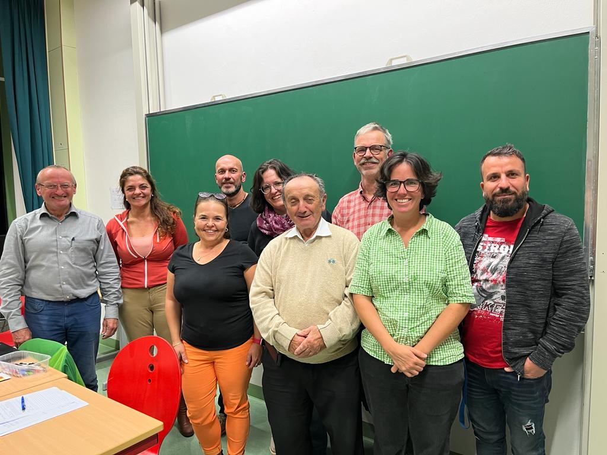

Elternvertretung
Das Amt der Klassenelternsprecher ist eine wichtige Position in jeder Grund- & Mittelschule. Die Klassenelternsprecher sind die Ansprechpartner für alle Eltern ihrer Klasse und repräsentieren die Interessen der Eltern gegenüber der Schulleitung und anderen Personen.
Weiterlesen
Die Aufgaben der Klassenselternsprecher sind vielfältig. Sie organisieren Elternabende, informieren die Eltern über schulische Angelegenheiten und unterstützen bei der Organisation von Klassenfesten und Ausflügen. Darüber hinaus sind sie Teil des Schulelternbeirats und vertreten die Interessen der Eltern auf Schul- und Gremiensitzungen.Ein wichtiger Aspekt ihrer Arbeit ist die Zusammenarbeit mit der Lehrerin oder dem Lehrer der Klasse. Sie sind Bindeglied zwischen Eltern und Schule und tragen dazu bei, dass ein gutes Verhältnis zwischen beiden Parteien besteht. Wenn es Probleme oder Konflikte gibt, können sie vermitteln und helfen, eine Lösung zu finden.
Die Klassenselternsprecher haben auch eine wichtige Rolle bei der Mitgestaltung des Schulalltags. Sie können Anregungen und Vorschläge der Eltern an die Schulleitung weitergeben und somit dazu beitragen, dass die Schule den Bedürfnissen der Kinder und Eltern gerecht wird.
Um Klassenselternsprecher zu werden, müssen Eltern bei der Wahlversammlung der Klassenelternschaft kandidieren. Hierbei ist es wichtig, dass sie die Unterstützung der anderen Eltern haben und sich aktiv in die Arbeit einbringen möchten. Eine Klassenselternsprecherin wird in der Regel für ein Schuljahr gewählt.
Insgesamt ist das Amt der Klassenselternsprecher ein wichtiges Amt, das eine enge Zusammenarbeit zwischen Eltern und Schule fördert. Durch ihre Arbeit tragen sie dazu bei, dass die Schule den Bedürfnissen der Kinder und Eltern gerecht wird und ein harmonisches Miteinander zwischen beiden Parteien besteht.
Grundschule
Klassenelternsprecher 2023/2024
| Kl | 1. ElternsprecherIn | 2. ElternsprecherIn |
|---|---|---|
| 1a | Manuela Skinner | Martin Hirmer |
| 1b | Eva Sedlmayr | Daniela Bader |
| 1c | Babette Wanisch | Brit Argyriou Rauschenbach |
| 1d | Nils Rhode | Ayfer Eursch |
| 2a | Carolina Pircher | Kristine Lorenz |
| 2b | Ramona Bauer | Marina Metzner |
| 2c | Sinem Düzel | Franziska Bohn |
| 2d | Sabine Schulze | Eni Fersch |
| 3a | Sarah Liese | Guido Bechmann |
| 3b | Kerstin Girbinger | Christine Hausmann |
| 3c | Katrin Benkert | Libertad Ballesteros Arias |
| 4a | Julia Tischler-Metzner | Katrin Bauer |
| 4b | Marina Winkler | Melanie Fellendorf |
| 4c | Tiffany Hilbert | Alexandra Bauer |
| 4d | Rosemarie Grasegger | Christine Konstanzer |
Mittelschule
Klassenelternsprecher 2023/2024
| Kl | 1. ElternsprecherIn | 2. ElternsprecherIn |
|---|---|---|
| 5a | Wolfgang Grab | Sabine Schulze |
| 5G | Katrin Adam | Daniel Langfeld |
| 6a | Nadine Tratz | Veronika Glatz |
| 6G | Katrin Adam | Barbara Baudrexl |
| 7G | Barbara Brenner | Carolin Santl |
| 7M | Daniela Barkow | Kerstin Thurnhuber |
| 8G | Hans-Jürgen Koppin-Schiebel | Irmgard Weiß |
| 8M | Gabriele Laczko | --- |
| 9G | Simon Keel | Stephanie Reinisch |
| 9M | Sabrina Lahr | Hubert Kuger |
| 10M | Thomas Neudeck | Brigitte Hillenbrand |
Elternbeirat

Franz Weber (Vorsitzender Grundschule), Ayfer Eursch, Agnes Hosak, Thomas Thalmeier, Esther Trunk, Wolfgang Hosak, Hubert Kuger (Vorsitzender Mittelschule), Libertad Ballesteros Arias, Abed Hamdan, Nils Rohde E-Mail: elternbeirat@volksschule-partenkirchen.de